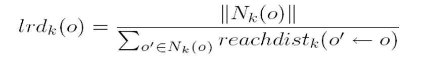
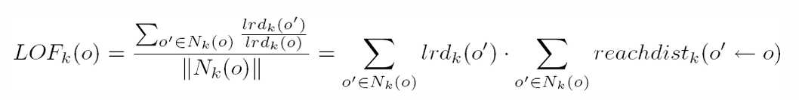

DATA MINING IRIS#
Iris dataset adalah salah satu dataset yang paling terkenal dalam ilmu data. Dataset ini pertama kali diperkenalkan oleh ahli botani Ronald Fisher pada tahun 1936 dalam karyanya yang terkenal “The Use of Multiple Measurements in Taxonomic Problems”. Dataset ini terdiri dari pengukuran morfologi dari 150 bunga iris yang berasal dari tiga spesies iris yang berbeda: Iris setosa, Iris versicolor, dan Iris virginica.

Setiap bunga iris dalam dataset ini diukur berdasarkan empat fitur (variabel):
Panjang Kelopak Sepal (Sepal Length): Panjang dalam cm dari kelopak sepal bunga iris.
Lebar Kelopak Sepal (Sepal Width): Lebar dalam cm dari kelopak sepal bunga iris.
Panjang Mahkota (Petal Length): Panjang dalam cm dari mahkota bunga iris.
Lebar Mahkota (Petal Width): Lebar dalam cm dari mahkota bunga iris.
sebelum memulai import dahulu library yang akan digunakan
import numpy as np
import pandas as pd
import matplotlib.pyplot as plt
import seaborn as sns
---------------------------------------------------------------------------
ModuleNotFoundError Traceback (most recent call last)
Cell In[1], line 2
1 import numpy as np
----> 2 import pandas as pd
3 import matplotlib.pyplot as plt
4 import seaborn as sns
ModuleNotFoundError: No module named 'pandas'
Memahami Data#
Siapkan database#
Untuk data yang akan digunakan sendiri, nantinya akan ditempatkan ke dalam database, saya sendiri menggunakan 2 database yaitu
MySQL
Postgre
Kedua database ini nantinya akan terintegrasi dengan cloud dari situs aiven.io
Menampilkan Data#
Pada tahapan ini saya akan mendeskripsikan data yang didapat dari Iris kaggle, yang nantinya akan ditaruh pada 2 database yang berbeda yaitu pada database mysql dan juga pada postgre, data tersebut nantinya akan diolah untuk pembelajaran
ambil data yang berada pada cloud aiven di database mysql
!pip install mysql-connector-python
Collecting mysql-connector-python
Downloading mysql_connector_python-8.3.0-cp39-cp39-manylinux_2_17_x86_64.whl (21.5 MB)
━━━━━━━━━━━━━━━━━━━━━━━━━━━━━━━━━━━━━━━━ 21.5/21.5 MB 38.6 MB/s eta 0:00:00
?25hInstalling collected packages: mysql-connector-python
Successfully installed mysql-connector-python-8.3.0
[notice] A new release of pip is available: 23.0.1 -> 24.0
[notice] To update, run: pip install --upgrade pip
import mysql.connector
import pandas as pd
# Informasi koneksi ke database MySQL di cloud aiven
hostname = 'mysql-3832c5d5-ikbar21116.a.aivencloud.com'
port = 28482
username = 'avnadmin'
password = 'AVNS_mwAH3wybkSrDiGU5knO'
database = 'defaultdb'
# Membuat koneksi ke database MySQL
conn = mysql.connector.connect(
host=hostname,
port=port,
user=username,
password=password,
database=database
)
# Membaca data dari database menggunakan Pandas
query = "SELECT * FROM data1"
df_1 = pd.read_sql(query, conn)
# Menutup koneksi ke database
conn.close()
/tmp/ipykernel_74/802532185.py:23: UserWarning: pandas only supports SQLAlchemy connectable (engine/connection) or database string URI or sqlite3 DBAPI2 connection. Other DBAPI2 objects are not tested. Please consider using SQLAlchemy.
df_1 = pd.read_sql(query, conn)
tampilkan data
df_1
| Id | SepalLengthCm | SepalWidthCm | Species | |
|---|---|---|---|---|
| 0 | 1 | 5.1 | 3.5 | Iris-setosa |
| 1 | 2 | 4.9 | 3.0 | Iris-setosa |
| 2 | 3 | 4.7 | 3.2 | Iris-setosa |
| 3 | 4 | 4.6 | 3.1 | Iris-setosa |
| 4 | 5 | NaN | 3.6 | None |
| ... | ... | ... | ... | ... |
| 145 | 146 | 6.7 | 3.0 | Iris-virginica |
| 146 | 147 | 6.3 | 2.5 | Iris-virginica |
| 147 | 148 | 6.5 | 3.0 | Iris-virginica |
| 148 | 149 | 6.2 | 3.4 | Iris-virginica |
| 149 | 150 | 5.9 | 3.0 | Iris-virginica |
150 rows × 4 columns
ambil data yang berada pada cloud aiven di database postgre
import psycopg2
import pandas as pd
# Informasi koneksi ke database MySQL di cloud aiven
hostname = 'pg-26b96dca-ikbar21116.a.aivencloud.com'
port = 28482
username = 'avnadmin'
password = 'AVNS_nUE4C-O886Wgyzsy_RS'
database = 'defaultdb'
# Membuat koneksi ke database MySQL
conn = psycopg2.connect(
host=hostname,
port=port,
user=username,
password=password,
database=database
)
# Membaca data dari database menggunakan Pandas
query = "SELECT * FROM iris"
df_2 = pd.read_sql(query, conn)
# Menutup koneksi ke database
conn.close()
/tmp/ipykernel_74/1299739618.py:22: UserWarning: pandas only supports SQLAlchemy connectable (engine/connection) or database string URI or sqlite3 DBAPI2 connection. Other DBAPI2 objects are not tested. Please consider using SQLAlchemy.
df_2 = pd.read_sql(query, conn)
menampilkan data dari database postgre
df_2
| Id | PetalLengthCm | PetalWidthCm | |
|---|---|---|---|
| 0 | 1 | 1.4 | 0.2 |
| 1 | 2 | 1.4 | 0.2 |
| 2 | 3 | 1.3 | 0.2 |
| 3 | 4 | 1.5 | 0.2 |
| 4 | 5 | 1.4 | 0.2 |
| ... | ... | ... | ... |
| 145 | 146 | 5.2 | 2.3 |
| 146 | 147 | 5.0 | 1.9 |
| 147 | 148 | 5.2 | 2.0 |
| 148 | 149 | 5.4 | 2.3 |
| 149 | 150 | 5.1 | 1.8 |
150 rows × 3 columns
Penggabungan dua tabel dari sumber yang berbeda#
menggabungkan kedua tabel tersebut agar dapat diolah, untuk penggabungannya sendiri menggunakan acuan dari Id yang ada pada kedua tabel tersebut
import pandas as pd
merged_df = pd.merge(df_1, df_2, on='Id')
merged_df = merged_df.reindex(['Id','SepalLengthCm','SepalWidthCm','PetalLengthCm','PetalWidthCm','Species'], axis="columns")
merged_df
| Id | SepalLengthCm | SepalWidthCm | PetalLengthCm | PetalWidthCm | Species | |
|---|---|---|---|---|---|---|
| 0 | 1 | 5.1 | 3.5 | 1.4 | 0.2 | Iris-setosa |
| 1 | 2 | 4.9 | 3.0 | 1.4 | 0.2 | Iris-setosa |
| 2 | 3 | 4.7 | 3.2 | 1.3 | 0.2 | Iris-setosa |
| 3 | 4 | 4.6 | 3.1 | 1.5 | 0.2 | Iris-setosa |
| 4 | 5 | NaN | 3.6 | 1.4 | 0.2 | None |
| ... | ... | ... | ... | ... | ... | ... |
| 145 | 146 | 6.7 | 3.0 | 5.2 | 2.3 | Iris-virginica |
| 146 | 147 | 6.3 | 2.5 | 5.0 | 1.9 | Iris-virginica |
| 147 | 148 | 6.5 | 3.0 | 5.2 | 2.0 | Iris-virginica |
| 148 | 149 | 6.2 | 3.4 | 5.4 | 2.3 | Iris-virginica |
| 149 | 150 | 5.9 | 3.0 | 5.1 | 1.8 | Iris-virginica |
150 rows × 6 columns
Pembersihan data#
membersihkan data yang mempunyai Species NULL data dan mendropnya, fungsi dari pembersihan data ini adalah agar ketika menginputkan nilai dari SepalLengthCm menggunakan knn dan mean, tidak ada data yang NULL pada Species
df_cleaned = merged_df.dropna(subset=['Species'])
df_cleaned
| Id | SepalLengthCm | SepalWidthCm | PetalLengthCm | PetalWidthCm | Species | |
|---|---|---|---|---|---|---|
| 0 | 1 | 5.1 | 3.5 | 1.4 | 0.2 | Iris-setosa |
| 1 | 2 | 4.9 | 3.0 | 1.4 | 0.2 | Iris-setosa |
| 2 | 3 | 4.7 | 3.2 | 1.3 | 0.2 | Iris-setosa |
| 3 | 4 | 4.6 | 3.1 | 1.5 | 0.2 | Iris-setosa |
| 5 | 6 | 5.4 | 3.9 | 1.7 | 0.4 | Iris-setosa |
| ... | ... | ... | ... | ... | ... | ... |
| 145 | 146 | 6.7 | 3.0 | 5.2 | 2.3 | Iris-virginica |
| 146 | 147 | 6.3 | 2.5 | 5.0 | 1.9 | Iris-virginica |
| 147 | 148 | 6.5 | 3.0 | 5.2 | 2.0 | Iris-virginica |
| 148 | 149 | 6.2 | 3.4 | 5.4 | 2.3 | Iris-virginica |
| 149 | 150 | 5.9 | 3.0 | 5.1 | 1.8 | Iris-virginica |
148 rows × 6 columns
Mencari missing values#
rows_with_null = df_cleaned[df_cleaned.isnull().any(axis=1)]
rows_with_null
| Id | SepalLengthCm | SepalWidthCm | PetalLengthCm | PetalWidthCm | Species | |
|---|---|---|---|---|---|---|
| 18 | 19 | NaN | 3.8 | 1.7 | 0.3 | Iris-setosa |
| 54 | 55 | NaN | 2.8 | 4.6 | 1.5 | Iris-versicolor |
| 112 | 113 | NaN | 3.0 | 5.5 | 2.1 | Iris-virginica |
Melakukan duplikasi data#
membuat data copy yang sudah dibersihkan pada bagian Speciesnya lalu membuat dataframe baru yang akan digunakan untuk memasukkan metode knn
duplikasi data untuk metode knn#
df_knn = df_cleaned.copy()
df_knn
| Id | SepalLengthCm | SepalWidthCm | PetalLengthCm | PetalWidthCm | Species | |
|---|---|---|---|---|---|---|
| 0 | 1 | 5.1 | 3.5 | 1.4 | 0.2 | Iris-setosa |
| 1 | 2 | 4.9 | 3.0 | 1.4 | 0.2 | Iris-setosa |
| 2 | 3 | 4.7 | 3.2 | 1.3 | 0.2 | Iris-setosa |
| 3 | 4 | 4.6 | 3.1 | 1.5 | 0.2 | Iris-setosa |
| 5 | 6 | 5.4 | 3.9 | 1.7 | 0.4 | Iris-setosa |
| ... | ... | ... | ... | ... | ... | ... |
| 145 | 146 | 6.7 | 3.0 | 5.2 | 2.3 | Iris-virginica |
| 146 | 147 | 6.3 | 2.5 | 5.0 | 1.9 | Iris-virginica |
| 147 | 148 | 6.5 | 3.0 | 5.2 | 2.0 | Iris-virginica |
| 148 | 149 | 6.2 | 3.4 | 5.4 | 2.3 | Iris-virginica |
| 149 | 150 | 5.9 | 3.0 | 5.1 | 1.8 | Iris-virginica |
148 rows × 6 columns
#
membuat data duplikat juga untuk dimasukkan rata-rata atau average dari Species
df_mean = df_cleaned.copy()
df_mean
| Id | SepalLengthCm | SepalWidthCm | PetalLengthCm | PetalWidthCm | Species | |
|---|---|---|---|---|---|---|
| 0 | 1 | 5.1 | 3.5 | 1.4 | 0.2 | Iris-setosa |
| 1 | 2 | 4.9 | 3.0 | 1.4 | 0.2 | Iris-setosa |
| 2 | 3 | 4.7 | 3.2 | 1.3 | 0.2 | Iris-setosa |
| 3 | 4 | 4.6 | 3.1 | 1.5 | 0.2 | Iris-setosa |
| 5 | 6 | 5.4 | 3.9 | 1.7 | 0.4 | Iris-setosa |
| ... | ... | ... | ... | ... | ... | ... |
| 145 | 146 | 6.7 | 3.0 | 5.2 | 2.3 | Iris-virginica |
| 146 | 147 | 6.3 | 2.5 | 5.0 | 1.9 | Iris-virginica |
| 147 | 148 | 6.5 | 3.0 | 5.2 | 2.0 | Iris-virginica |
| 148 | 149 | 6.2 | 3.4 | 5.4 | 2.3 | Iris-virginica |
| 149 | 150 | 5.9 | 3.0 | 5.1 | 1.8 | Iris-virginica |
148 rows × 6 columns
Mencari Duplikasi Pada Data#
df_cleaned_dup = df_mean.drop_duplicates()
df_cleaned_dup
| Id | SepalLengthCm | SepalWidthCm | PetalLengthCm | PetalWidthCm | Species | |
|---|---|---|---|---|---|---|
| 0 | 1 | 5.1 | 3.5 | 1.4 | 0.2 | Iris-setosa |
| 1 | 2 | 4.9 | 3.0 | 1.4 | 0.2 | Iris-setosa |
| 2 | 3 | 4.7 | 3.2 | 1.3 | 0.2 | Iris-setosa |
| 3 | 4 | 4.6 | 3.1 | 1.5 | 0.2 | Iris-setosa |
| 5 | 6 | 5.4 | 3.9 | 1.7 | 0.4 | Iris-setosa |
| ... | ... | ... | ... | ... | ... | ... |
| 145 | 146 | 6.7 | 3.0 | 5.2 | 2.3 | Iris-virginica |
| 146 | 147 | 6.3 | 2.5 | 5.0 | 1.9 | Iris-virginica |
| 147 | 148 | 6.5 | 3.0 | 5.2 | 2.0 | Iris-virginica |
| 148 | 149 | 6.2 | 3.4 | 5.4 | 2.3 | Iris-virginica |
| 149 | 150 | 5.9 | 3.0 | 5.1 | 1.8 | Iris-virginica |
148 rows × 6 columns
melihat data teratas
print(df_cleaned_dup.head())
Id SepalLengthCm SepalWidthCm PetalLengthCm PetalWidthCm Species
0 1 5.1 3.5 1.4 0.2 Iris-setosa
1 2 4.9 3.0 1.4 0.2 Iris-setosa
2 3 4.7 3.2 1.3 0.2 Iris-setosa
3 4 4.6 3.1 1.5 0.2 Iris-setosa
5 6 5.4 3.9 1.7 0.4 Iris-setosa
setelah itu menjelaskan data tersebut, termasuk hitungan, mean, nilai min dan max serta beberapa persentil.
print(df_cleaned_dup.describe())
Id SepalLengthCm SepalWidthCm PetalLengthCm PetalWidthCm
count 148.000000 145.000000 148.000000 148.000000 148.000000
mean 75.756757 5.828966 3.051351 3.757432 1.201351
std 43.267971 0.824698 0.434011 1.753212 0.762290
min 1.000000 4.300000 2.000000 1.000000 0.100000
25% 38.750000 5.100000 2.800000 1.600000 0.300000
50% 75.500000 5.800000 3.000000 4.350000 1.300000
75% 113.250000 6.400000 3.300000 5.100000 1.800000
max 150.000000 7.900000 4.400000 6.900000 2.500000
Preprocessing#
pada tabel yang sudah digabungkan dari 2 data tersebut nantinya akan dibuatkan tabel baru yang akan digunakan sebagai test dan bahan percobaan
kode dibawah untuk menunjukkan ada berapa banyak data yang kosong disetiap kolom
print(merged_df.isnull().sum())
Id 0
SepalLengthCm 5
SepalWidthCm 0
PetalLengthCm 0
PetalWidthCm 0
Species 2
dtype: int64
null_data = df_knn.loc[df_knn['SepalLengthCm'].isnull()]
null_data
| Id | SepalLengthCm | SepalWidthCm | PetalLengthCm | PetalWidthCm | Species | |
|---|---|---|---|---|---|---|
| 18 | 19 | NaN | 3.8 | 1.7 | 0.3 | Iris-setosa |
| 54 | 55 | NaN | 2.8 | 4.6 | 1.5 | Iris-versicolor |
| 112 | 113 | NaN | 3.0 | 5.5 | 2.1 | Iris-virginica |
Mencari nilai rata-rata#
Mencari nilai rata2 dari setiap SepalLengthCm yang kosong dari setiap Species
setosa_df = df_mean[df_mean['Species'] == 'Iris-setosa']
mean_sepal_length_setosa = setosa_df['SepalLengthCm'].mean().round(1)
print(mean_sepal_length_setosa)
5.0
color_df = df_mean[df_mean['Species'] == 'Iris-versicolor']
mean_sepal_length_color = color_df['SepalLengthCm'].mean().round(1)
print(mean_sepal_length_color)
5.9
virgi_df = df_mean[df_mean['Species'] == 'Iris-virginica']
mean_sepal_length_virgi = virgi_df['SepalLengthCm'].mean().round(1)
print(mean_sepal_length_virgi)
6.6
Menginputkan nilai mean ke Dataframe#
Setelah mendapat nilai rata-rata dari setiap Species, saya akan memasukkan nilai tersebut kedalam dataFrame yang sudah dibuat untuk input nilai yang sudah didapatkan diatas
rows_with_null = df_mean[df_mean['SepalLengthCm'].isnull()]
df_mean.loc[(df_mean['Species'] == 'Iris-setosa') & (df_mean['SepalLengthCm'].isnull()), 'SepalLengthCm'] = mean_sepal_length_setosa
df_mean.loc[(df_mean['Species'] == 'Iris-versicolor') & (df_mean['SepalLengthCm'].isnull()), 'SepalLengthCm'] = mean_sepal_length_color
df_mean.loc[(df_mean['Species'] == 'Iris-virginica') & (df_mean['SepalLengthCm'].isnull()), 'SepalLengthCm'] = mean_sepal_length_virgi
df_mean
| Id | SepalLengthCm | SepalWidthCm | PetalLengthCm | PetalWidthCm | Species | |
|---|---|---|---|---|---|---|
| 0 | 1 | 5.1 | 3.5 | 1.4 | 0.2 | Iris-setosa |
| 1 | 2 | 4.9 | 3.0 | 1.4 | 0.2 | Iris-setosa |
| 2 | 3 | 4.7 | 3.2 | 1.3 | 0.2 | Iris-setosa |
| 3 | 4 | 4.6 | 3.1 | 1.5 | 0.2 | Iris-setosa |
| 5 | 6 | 5.4 | 3.9 | 1.7 | 0.4 | Iris-setosa |
| ... | ... | ... | ... | ... | ... | ... |
| 145 | 146 | 6.7 | 3.0 | 5.2 | 2.3 | Iris-virginica |
| 146 | 147 | 6.3 | 2.5 | 5.0 | 1.9 | Iris-virginica |
| 147 | 148 | 6.5 | 3.0 | 5.2 | 2.0 | Iris-virginica |
| 148 | 149 | 6.2 | 3.4 | 5.4 | 2.3 | Iris-virginica |
| 149 | 150 | 5.9 | 3.0 | 5.1 | 1.8 | Iris-virginica |
148 rows × 6 columns
Menginputkan data menggunakan metode knn#
pada bagian ini saya akan menginputkan nilai rata-rata dari setiap SepalLengthCm dari Species untuk mengisi ke kolom yang memiliki NULL dengan metode knn
from sklearn.impute import KNNImputer
imputer = KNNImputer(n_neighbors=3)
df_knn['SepalLengthCm'] = imputer.fit_transform(df_knn[['SepalLengthCm']]).round(1)
df_knn
| Id | SepalLengthCm | SepalWidthCm | PetalLengthCm | PetalWidthCm | Species | |
|---|---|---|---|---|---|---|
| 0 | 1 | 5.1 | 3.5 | 1.4 | 0.2 | Iris-setosa |
| 1 | 2 | 4.9 | 3.0 | 1.4 | 0.2 | Iris-setosa |
| 2 | 3 | 4.7 | 3.2 | 1.3 | 0.2 | Iris-setosa |
| 3 | 4 | 4.6 | 3.1 | 1.5 | 0.2 | Iris-setosa |
| 5 | 6 | 5.4 | 3.9 | 1.7 | 0.4 | Iris-setosa |
| ... | ... | ... | ... | ... | ... | ... |
| 145 | 146 | 6.7 | 3.0 | 5.2 | 2.3 | Iris-virginica |
| 146 | 147 | 6.3 | 2.5 | 5.0 | 1.9 | Iris-virginica |
| 147 | 148 | 6.5 | 3.0 | 5.2 | 2.0 | Iris-virginica |
| 148 | 149 | 6.2 | 3.4 | 5.4 | 2.3 | Iris-virginica |
| 149 | 150 | 5.9 | 3.0 | 5.1 | 1.8 | Iris-virginica |
148 rows × 6 columns
Memasukkan data ke dalam tabel#
Untuk pada bagian ini saya akan memasukkan data yang telah saya peroleh yaitu SepalLengthCm yang menggunakan rata-rata dan dengan metode knn ke tabel baru yang sudah mempunyai isi dari data iris yang masib belum mempunyai nilai NULL atau belum dirubah isinya.
import pymysql
# Mengatur koneksi ke database MySQL
host = 'mysql-3832c5d5-ikbar21116.a.aivencloud.com'
user = 'avnadmin'
password = 'AVNS_mwAH3wybkSrDiGU5knO'
database = 'defaultdb'
port = 28482
conn = pymysql.connect(host=host, user=user, password=password, database=database, port=port)
# Nama kolom yang ingin dimasukkan ke dalam tabel
kolom_id = 'Id'
kolom_1 = 'SepalLengthCm_mean'
kolom_2 = 'SepalLengthCm_knn'
# Nama tabel di database
nama_tabel = 'data_preprocessing'
# Mendapatkan nilai dari kolom DataFrame
nilai_kolom_id = df_mean['Id']
nilai_kolom_1 = df_mean['SepalLengthCm']
nilai_kolom_2 = df_knn['SepalLengthCm']
# Membuat kursor untuk eksekusi perintah SQL
cursor = conn.cursor()
# Memasukkan nilai ke dalam tabel
for id, nilai_1, nilai_2 in zip(nilai_kolom_id, nilai_kolom_1, nilai_kolom_2):
if pd.isnull(id): # Jika Id kosong, gunakan pernyataan INSERT INTO
query = f"INSERT INTO {nama_tabel} ({kolom_1}, {kolom_2}) VALUES ('{nilai_1}', '{nilai_2}')"
else: # Jika Id sudah ada, gunakan pernyataan UPDATE
query = f"UPDATE {nama_tabel} SET {kolom_1} = '{nilai_1}', {kolom_2} = '{nilai_2}' WHERE {kolom_id} = {id}"
cursor.execute(query)
# Melakukan commit untuk menyimpan perubahan
conn.commit()
# Menutup koneksi
conn.close()
Setelah itu tampilkan data yang telah diinputkan ke tabel baru dalam database
df_3 = _deepnote_execute_sql('SELECT * FROM data_preprocessing', 'SQL_59446299_EF9E_4DEA_B1AA_5D8CFCBE7E1C', audit_sql_comment='', sql_cache_mode='cache_disabled')
df_3
| Id | SepalLengthCm | SepalLengthCm_mean | SepalLengthCm_knn | |
|---|---|---|---|---|
| 0 | 1 | 5.1 | 5.1 | 5.1 |
| 1 | 2 | 4.9 | 4.9 | 4.9 |
| 2 | 3 | 4.7 | 4.7 | 4.7 |
| 3 | 4 | 4.6 | 4.6 | 4.6 |
| 4 | 5 | 5.0 | NaN | NaN |
| ... | ... | ... | ... | ... |
| 145 | 146 | 6.7 | 6.7 | 6.7 |
| 146 | 147 | 6.3 | 6.3 | 6.3 |
| 147 | 148 | 6.5 | 6.5 | 6.5 |
| 148 | 149 | 6.2 | 6.2 | 6.2 |
| 149 | 150 | 5.9 | 5.9 | 5.9 |
150 rows × 4 columns
Visualisasi Data#
Visualisasi data merupakan cara yang bagus untuk memahami data,visualisasi data pada dataset iris merupakan cara yang bagus untuk memahami karakteristik dari setiap kelas iris (setosa, versicolor, dan virginica) serta hubungan antara fitur-fiturnya (seperti panjang dan lebar kelopak dan mahkota). Di bawah ini, adalah visualisasi data yang sudah dibersihkan dari duplikasi data:
visualisasi data dari mean#
box and whisker plots
import matplotlib.pyplot as plt
# Drop 'id' and 'species' columns
df_mean_atr = df_mean.drop(columns=['Id', 'Species'])
# Determine the layout based on the number of columns
num_columns = len(df_mean_atr.columns)
num_rows = (num_columns + 1) // 2
# Plotting with adjusted layout
df_mean_atr.plot(kind='box', subplots=True, layout=(num_rows, 2), sharex=False, sharey=False)
plt.show()
histograms
df_mean_atr.hist()
plt.show()
scatter plot matrix
import pandas.plotting as pd_plotting
import matplotlib.pyplot as plt
pd_plotting.scatter_matrix(df_mean_atr)
plt.show()
visualisasi data dari knn#
box and whisker plots
import matplotlib.pyplot as plt
# Drop 'id' and 'species' columns
df_knn_atr = df_knn.drop(columns=['Id', 'Species'])
# Determine the layout based on the number of columns
num_columns = len(df_knn_atr.columns)
num_rows = (num_columns + 1) // 2
# Plotting with adjusted layout
df_knn_atr.plot(kind='box', subplots=True, layout=(num_rows, 2), sharex=False, sharey=False)
plt.show()
histograms
df_knn_atr.hist()
plt.show()

scatter plot matrix
import pandas.plotting as pd_plotting
import matplotlib.pyplot as plt
pd_plotting.scatter_matrix(df_knn_atr)
plt.show()
Visualisasi data untuk Species#
pertama-tama yaitu mengambil data Species dari data frame df_cleaned_dup, yaitu data yang sudah dibersihkan namun masih ada nilai NULL pada SepalLengthCm
Species = df_cleaned_dup['Species'].value_counts().reset_index()
Species
| Species | count | |
|---|---|---|
| 0 | Iris-versicolor | 50 |
| 1 | Iris-setosa | 49 |
| 2 | Iris-virginica | 49 |
Setelah itu tampilkan visualisasi data
Deteksi Outliers(Local Outlier Factor)#
Konsep Local Outlier Faktor#
Algoritme Local Outlier Factor (LOF) adalah metode deteksi anomali tanpa pengawasan yang menghitung deviasi kepadatan lokal dari titik data tertentu terhadap titik data tetangganya. Ini menganggap sampel yang memiliki kepadatan jauh lebih rendah daripada sampel tetangganya sebagai outlier. metode ini digunakan untuk mendeteksi outlier dalam data multidimensi dengan memperhitungkan kepadatan lokal. LOF mengukur derajat “keanehan” atau “kelainan” dari sebuah titik data terhadap tetangga-tetangganya. Pendekatan ini bermanfaat karena bisa mengidentifikasi outlier yang tidak bisa dideteksi hanya dengan mempertimbangkan jarak absolut dari tetangganya.
Local Outlier Factor juga memiliki beberapa konsep yang hars dipahami secara berurutan yaitu
K-distance (dist_K) dan K-neighbors
K-distance (dist_K) adalah jarak ke tetangga terdekat ke K. K-neighbors dilambahkan dengan Nk(A) mencakup himpunan titik yang terletak di dalam atau pada lingkaran berjari-jari jarak K. K-tetangga bisa lebih dari atau sama dengan nilai K.
Reachability Density(RD)
Local Reachability Density(LRD)
Local Outlier Factor(LOF)
Menghitung manual Local Outlier Factor#
data contoh data dengan tipe numerik 3 fitur jumlah data 10 k=3 p=2 (euclidian distance), berikut merupakan contohnya :
MENGHITUNG JARAK DAN MENETUKAN K-NEIGHBOUR
Untuk tahap pertama, kita melakukan perhitungan pada semua jarak antara setiap data dengan euclidean distance, untuk rumusnya seperti dibawah ini

Setelah itu tentukan 3 jarak terdekat dari setiap data (K=3)
Setelah itu tentukan Jarak terdekat ketiga dari masing2 data
Menghitung Reachability Distance(RD)
Setelah mendapat Jarak Terdekat ketiga dari masing-masing data, selanjutnya melakukan perhitungan Reachability Distance
Setelah itu hitung Reachability Distance dari maring-masing objek, untuk rumusnya yaitu :

Menghitung Local Reachability Distance (LRD)
Selanjutnya melakukan perhitungan Local Reachability Distance (LRD), LRD dirumuskan seperti di bawah ini :
Berdasarkan rumus diatas, kita dapat melakukan perhitungan seperti berikut :
Menghitung Local Outlier Factor
Selanjutnya yang terakhir yaitu menghitung Local Outlier Factor (LOF), dirumuskan sebagai berikut :
berdasarkan rumus yang ada pada diatas kita dapat memperoleh nilai sebagai berikut
Dari hasil diatas dapat disimpulkan bahwa terdapat nilai lof pada baris F, dikarenakan memiliki nilai yang tinggi
Menghitung menggunakan python#
pada perhitungan ini masih menggunakan data yang sama di atas
from sklearn.neighbors import LocalOutlierFactor
X = [
(4, 5, 1),
(6, 9, 7),
(1, 5, 3),
(2, 4, 6),
(5, 3, 2),
(6, 2, 9),
(5, 7, 4),
(1, 2, 5),
(3, 3, 9),
(5, 7, 2)
]
lof = LocalOutlierFactor(n_neighbors=3, contamination=0.1)
y_pred = lof.fit_predict(X)
print("Predicted table:", y_pred)
print("Negative LOF scores:", -lof.negative_outlier_factor_) # Ubah tanda negatif untuk mendapatkan nilai LOF positif
Predicted table: [ 1 1 1 1 1 -1 1 1 1 1]
Negative LOF scores: [1.02388584 1.22050401 0.95114439 1.0376618 0.95701983 1.28316768
1.09559951 0.90175601 1.07891475 0.92941908]
Berdasarkan perhitungan tersebut terdapat data outlier pada index-6 seperti pada perhitungan diatas
Implementasi pada Local Outlier Factor pada data iris#
sebelum melakukan hal ini, tambahkan beberapa outlier ke dalam data iris
# Informasi koneksi ke database MySQL di cloud Aiven
hostname = 'mysql-3832c5d5-ikbar21116.a.aivencloud.com'
port = 28482
username = 'avnadmin'
password = 'AVNS_mwAH3wybkSrDiGU5knO'
database = 'defaultdb'
# Membuat koneksi ke database MySQL
conn = mysql.connector.connect(
host=hostname,
port=port,
user=username,
password=password,
database=database
)
# Mengeksekusi perintah UPDATE untuk mengubah nilai SepalLengthCm
cur = conn.cursor()
query = "UPDATE iris_lof SET SepalLengthCm = 10 WHERE Id IN (2, 8, 9)"
cur.execute(query)
# Mengeksekusi perintah UPDATE untuk mengubah nilai SepalWidthCm
query = "UPDATE iris_lof SET SepalWidthCm = 10 WHERE Id IN (5, 10, 16)"
cur.execute(query)
# Melakukan commit perubahan
conn.commit()
# Menutup kursor
cur.close()
# Membaca data dari database menggunakan Pandas setelah perubahan
query = "SELECT * FROM iris_lof"
df_end = pd.read_sql(query, conn)
# Menutup koneksi ke database
conn.close()
# Menampilkan DataFrame Pandas
df_end
/tmp/ipykernel_74/3799729213.py:34: UserWarning: pandas only supports SQLAlchemy connectable (engine/connection) or database string URI or sqlite3 DBAPI2 connection. Other DBAPI2 objects are not tested. Please consider using SQLAlchemy.
df_end = pd.read_sql(query, conn)
| Id | SepalLengthCm | SepalWidthCm | PetalLengthCm | PetalWidthCm | |
|---|---|---|---|---|---|
| 0 | 1 | 5.1 | 3.5 | 1.4 | 0.2 |
| 1 | 2 | 10.0 | 3.0 | 1.4 | 0.2 |
| 2 | 3 | 4.7 | 3.2 | 1.3 | 0.2 |
| 3 | 4 | 4.6 | 3.1 | 1.5 | 0.2 |
| 4 | 5 | 5.0 | 10.0 | 1.4 | 0.2 |
| ... | ... | ... | ... | ... | ... |
| 145 | 146 | 6.7 | 3.0 | 5.2 | 2.3 |
| 146 | 147 | 6.3 | 2.5 | 5.0 | 1.9 |
| 147 | 148 | 6.5 | 3.0 | 5.2 | 2.0 |
| 148 | 149 | 6.2 | 3.4 | 5.4 | 2.3 |
| 149 | 150 | 5.9 | 3.0 | 5.1 | 1.8 |
150 rows × 5 columns
Setelah itu lakukan pencarian outlier dengan Local Outlier Factor (LOF)
from sklearn.neighbors import LocalOutlierFactor
import mysql.connector
import matplotlib.pyplot as plt
# Informasi koneksi ke database MySQL
hostname = 'mysql-3832c5d5-ikbar21116.a.aivencloud.com'
port = 28482
username = 'avnadmin'
password = 'AVNS_mwAH3wybkSrDiGU5knO'
database = 'defaultdb'
# Membuat koneksi ke database MySQL
conn = mysql.connector.connect(
host=hostname,
port=port,
user=username,
password=password,
database=database
)
# Membaca data dari database menggunakan Pandas
query = "SELECT SepalLengthCm, SepalWidthCm FROM iris_lof"
cursor = conn.cursor()
cursor.execute(query)
rows = cursor.fetchall()
x = [[row[0], row[1]] for row in rows]
# Menutup koneksi ke database
conn.close()
# Membuat model LOF
lof = LocalOutlierFactor(n_neighbors=13, contamination=0.03)
# Melakukan prediksi outlier
y_pred = lof.fit_predict(x)
# Menampilkan data dengan outlier yang diidentifikasi
outlier_indices = [i for i, label in enumerate(y_pred) if label == -1]
values = [x[i] for i in outlier_indices]
plt.scatter([point[0] for point in x], [point[1] for point in x])
plt.scatter([point[0] for point in values], [point[1] for point in values], color='r')
plt.show()
Berdasarkan visualisasi data yang diperoleh diatas menunjukkan bahwa terdapat outlier dengan warna merah, outlier ini terdapat pada SepalLengthCm yang berada pada sumbu x dan SepalWidthCm yang berada pada sumbu y, dapat disimpulkan bahwa outlier berada pada sumbu x memliki jarak yang sangat jauh dibandingkan dengan sumbu y
DATA MODELLING#
Naive Bayes Classification#
Naive Bayes adalah salah satu algoritma dalam klasifikasi yang tidak boleh diabaikan karena karakteristik khususnya yaitu “naif”. Hal ini membuat asumsi bahwa fitur pengukuran tidak bergantung satu sama lain.
Misalnya, suatu hewan dapat dianggap kucing jika ia memiliki mata kucing, kumis, dan ekor yang panjang. Sekalipun ciri-ciri ini bergantung satu sama lain atau pada keberadaan ciri-ciri lainnya, semua sifat ini secara independen berkontribusi pada kemungkinan bahwa hewan tersebut adalah kucing dan itulah sebabnya ia dikenal sebagai ‘Naif’.
Menurut Teorema Bayes, berbagai fitur saling independen. Untuk dua kejadian bebas, P(A,B) = P(A)P(B). Asumsi Teorema Bayes ini mungkin tidak pernah ditemui dalam praktik, oleh karena itu asumsi ini merupakan bagian “naif” dalam Naive Bayes. Teorema Bayes dinyatakan sebagai: P(a|b) = (P(b|a) * P(a)) / P(b). Dimana P(a|b) adalah peluang terjadinya b.
Perhitungan Manual#
untuk perhitungan manual data yang digunakan, pertama-tama yaitu menghapus 10 data paling atas pada masing-masing species. Setelah itu, mentrain sisanya, yaitu 80% dari datanya.
Berikut Merupakan Data Yang akan digunakan :

Mencari probabilitas Prior
Mencari Nilai Rata-rata dan Standar Deviasi
Berikut merupakan perhitungan yang sudah didapatkan

pada data tersebut sudah memiliki nilai rata-rata serta standar deviasi dari setiap data tersebut, ketika sudah memiliki nilai-nilai tersebut maka langkah selanjutnya adalah menghitung menghitung probabilitas likelihood dan melakukan klasifikasi menggunakan Naive Bayes.
Setelah itu mencari likelihood dengan rumus dibawah ini dan juga dengan data | x | 5 | 3 | 1 | 0.1 |

Dari kelas Iris-setosa :
Dari kelas Iris-versicolor
Dari kelas Iris-virginica
dari perhitungan diatas nilai distribusi gaussian setiap species dapat disimpulkan sebagai berikut

Setelah itu menghitung probabilitas posterior dengan teorema bayes, berikut rumus teorema bayes :

Nilai-nilai distribusi gaussian yang sudah didapat diatas dapat kita gunakan untuk menentukan likelihood
dari perhitungan diatas dapat diketahui bahwa nilai dari iris-setosa merupakan nilai yang paling besar yang menunjukkan bahwa data tersebut merupakan data dari spesies iris-setosa
Dengan code#
Implementasi dengan python
import numpy as np
import matplotlib.pyplot as plt
import pandas as pd
dataset = pd.read_csv('https://raw.githubusercontent.com/mk-gurucharan/Classification/master/IrisDataset.csv')
dataset
| sepal_length | sepal_width | petal_length | petal_width | species | |
|---|---|---|---|---|---|
| 0 | 5.1 | 3.5 | 1.4 | 0.2 | setosa |
| 1 | 4.9 | 3.0 | 1.4 | 0.2 | setosa |
| 2 | 4.7 | 3.2 | 1.3 | 0.2 | setosa |
| 3 | 4.6 | 3.1 | 1.5 | 0.2 | setosa |
| 4 | 5.0 | 3.6 | 1.4 | 0.2 | setosa |
| ... | ... | ... | ... | ... | ... |
| 145 | 6.7 | 3.0 | 5.2 | 2.3 | virginica |
| 146 | 6.3 | 2.5 | 5.0 | 1.9 | virginica |
| 147 | 6.5 | 3.0 | 5.2 | 2.0 | virginica |
| 148 | 6.2 | 3.4 | 5.4 | 2.3 | virginica |
| 149 | 5.9 | 3.0 | 5.1 | 1.8 | virginica |
150 rows × 5 columns
fitur-fitur yang digunakan untuk klasifikasi (sepal_length, sepal_width, petal_length, petal_width) akan ditaruh ke dalam variabel x dan species pada variabel y
X = dataset[['sepal_length', 'sepal_width', 'petal_length', 'petal_width' ]]
y = dataset['species']
bagi dataset menjadi 2 data yaitu training set dan test set
from sklearn.model_selection import train_test_split
X_train, X_test, y_train, y_test = train_test_split(X, y, test_size=0.2)
setelah itu gaussian naive bayes diinisiasi dan dilatih, setelah dilatih model digunakan untuk memprediksi hasil yang nantinya akan digunakan untuk menentukan spesies suatu data
from sklearn.naive_bayes import GaussianNB
from sklearn.metrics import accuracy_score
gnb = GaussianNB()
gnb = gnb.fit(X_train, y_train)
y_pred = gnb.predict(X_test)
acc_secore = round(accuracy_score(y_pred, y_test), 3)
print('Accuracy: ', acc_secore)
Accuracy: 1.0
setelah model gnb berhasil dibuat dan menunjukkan hasil akurasinya yaitu 1.0 yang menunjukkan bahwa mode yang dibangun baik, selanutnya adalah menguji model tersebut untuk memprediksi spesies dari data yang telah dimasukkan berikut, untuk datanya yaitu (sepalLengthCm=5, sepalWidthCm=3, petalLengthCm=1, pelaWidthCm=0.1)
print(gnb.predict([[5, 3, 1, 0.1]]))
['setosa']
/shared-libs/python3.9/py/lib/python3.9/site-packages/sklearn/base.py:450: UserWarning: X does not have valid feature names, but GaussianNB was fitted with feature names
warnings.warn(
hasil diatas menunjukkan bahwa data tersebut merupakan data dari iris-setosa, dan juga sesuai dengan hasil dari perhitungan manual yang telah dilakukan sebelumnya
![Created in deepnote.com]() Created in Deepnote
Created in Deepnote